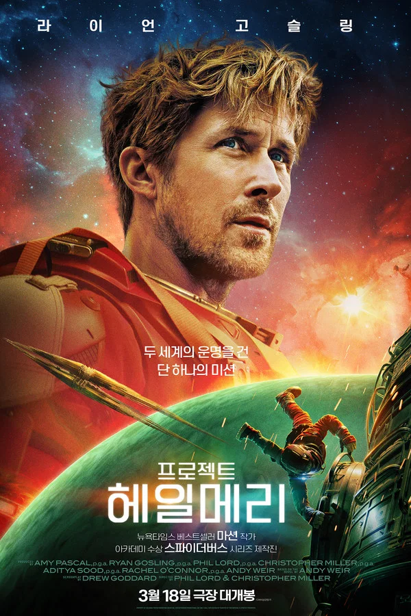
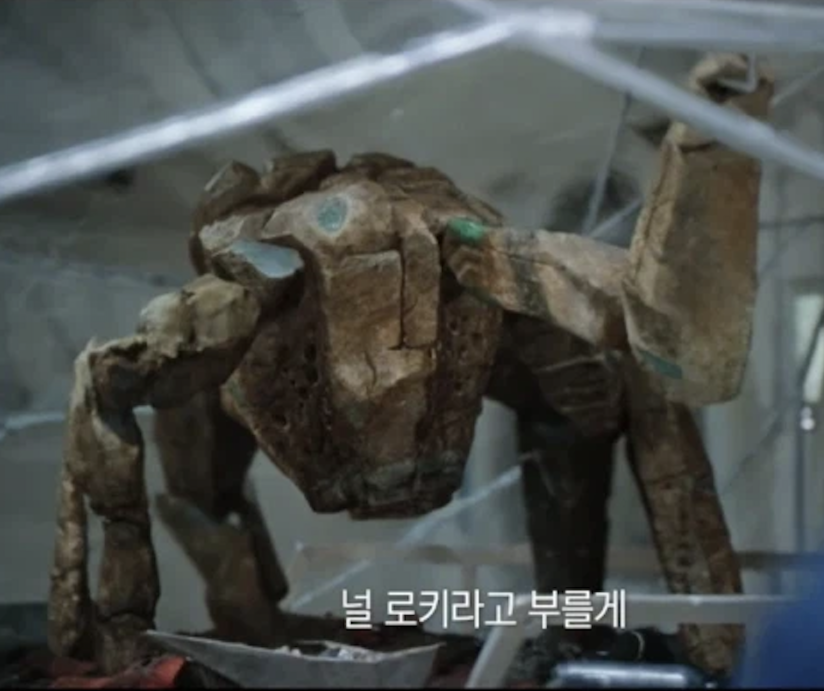

두 세계의 운명을 건 단 하나의 미션
눈을 떠보니 아득한 우주의 한가운데에서 깨어난 중학교 과학교사 그레이스는 희미한 기억 속에서 자신이 죽어가는 태양으로부터 지구와 인류를 살릴 마지막 희망으로 이곳에 왔다는 사실을 알게 된다.
잃어버린 기억으로 인해 모든 것이 혼란스러운 상황에서 그레이스는 우연히 우주 한복판에서 같은 목적으로 온 뜻밖의 존재 로키를 만나게 되고 그레이스와 로키는 각 두 행성의 운명을 건 마지막 미션을 수행하러 떠나게 되는데…

주인공. 코마에 빠졌다가 깨어나 기억상실증에 걸린 주인공이 우주선을 관찰하고 탐험하면서 서서히 과거의 기억을 되찾고 자신의 임무를 수행하는 과정을 그리고 있다.
엄청난 개그 캐릭터로, 우주 한복판에 기억상실 상태로 고립된 상태에서도 유머감각을 잃지 않는 진정한 개그 악귀다.

항성 '40 에리다니'의 에리드 행성에서 온 지적 외계인.